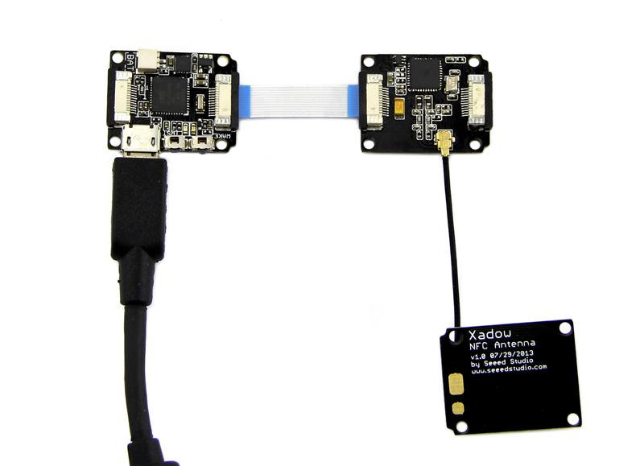
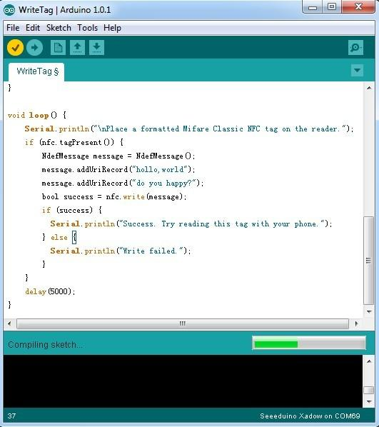
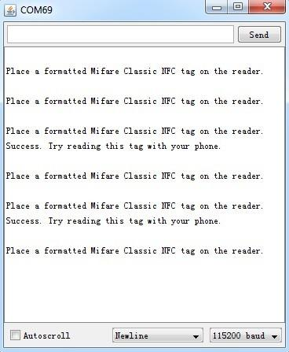
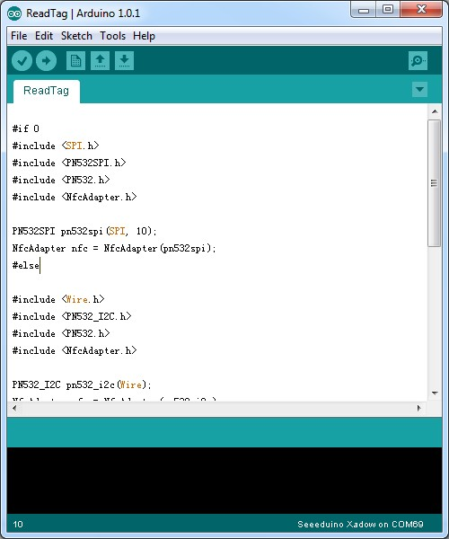
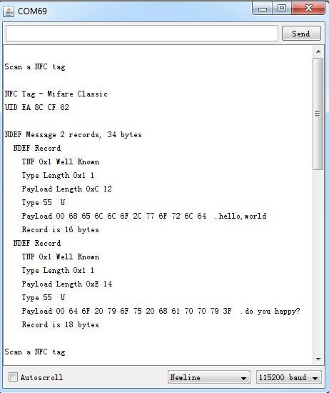

Near Field Communication (NFC) is a set of short-range wireless technologies. It's behind daily applications such as access control system and mobile payment system.
Xadow NFC features a highly integrated transceiver module PN532 which handles contactless communication at 13.56MHz. You can read and write a 13.56MHz tag with this module or implement point to point data exchange with two Xadow NFCs. Xadow NFC is designed to use I2C, SPI or UART communication protocols, and I2C is the default mode. In addition, we assign an independent PCB antenna which can easily stretch out of any enclosure you use, leaving more room for you to design the exterior of your project.
Xadow NFC has many capabilities which integrates a PN532 NFC controller, our Arduino library supports reading/writing tags, phone-to-Xadow NFC communication, tag emulation at this time, it's a 3-in-1 allstar.
Note: When Xadow NFC is using SPI communication protocols, there is an existing library which supports phone-to-Xadow NFC communication. The default communication mode for this product is I2C, so the library cannot use directly.
Before reading/writing tag, what you need to prepare is the hardware installation and the libraries.

Note: when connect Xadow - NFC to Xadow - Main Board, you should concern about the connection direction. The connection method is that the unfilled corner of one Xadow module need to connect to the right angle of another module (see four corners of each Xadow module).
Note:
Make sure that you have folders - PN532, PN532_SPI, PN532_I2C, PN532_HSU and NDEF (from NDEF Library) in your Arduino Library folder.

In this code, the function message.addUriRecord("http://arduino.cc") is used to write message to tag. You can replace the message "http://arduino.cc" with new message. For example, we input "do you happy?" and "hello, world" using this function.

If you want to know whether the writing operation you have just done is successful, you can use the code:ReadTag for checking.


It is essential to explain a NDEF message in order to have a clear recognition about the above picture. There can be multiple records in a NDEF message. For our analysis purposes we use only one NDEF records.